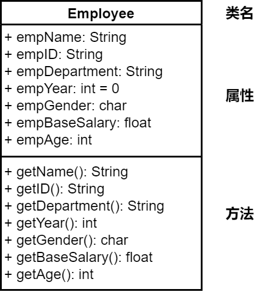

Java程序设计
第四章 面向对象基础(一)
李懿
医学技术与信息工程学院
浙江中医药大学
面向对象的概念
从现实世界中的对象到类的模型
面向对象的四大特点
- 抽象，即将事物映射为程序中的对象
- 封装，即将数据及对数据的操作捆绑在一起成为类
- 继承，即将一个已有类中的数据和方法保留，加上自己特殊的方法和数据，构成一个新的类
- 多态，即指在一个或多个类中，不同的方法可以有相同的名字
Java vs. C++

Java面向对象实现的规则
- 类的定义与实现在同一个文件中
- 源文件的命名需以文件中以public修饰的类名命名，严格区分大小写
- 源文件中可以有多个类，但以public修饰的类最多只能有一个
- 以extends表示继承关系，指明从哪个父类继承
- 若没有用extends指明父类，默认以Object类为父类
- Object类是唯一一个没有父类的类，其它类都有且仅有一个父类
- 类定义不以";"结束
面向对象类示例
创建一个职员类
| 姓名 | 工号 | 部门 | 公司年限 | 性别 | 基本工资 | 年龄 |
|---|---|---|---|---|---|---|
| 张凡 | 01012005 | 技术研发部 | 7 | 男 | 8877.26 | 35 |
| 刘青 | 06013007 | 人力资源部 | 8 | 男 | 5385.89 | 41 |
| 江流 | 04021020 | 项目一部 | 4 | 女 | 4729.06 | 29 |
职员类属性项设置
| 属性项 | 姓名 | 工号 | 部门 | 公司年限 | 性别 | 基本工资 | 年龄 |
|---|---|---|---|---|---|---|---|
| 属性名 | empName | empID | empDep | empYear | empGender | empSalary | empAge |
| 数据类型 | String | String | String | int | char | float | int |
| 取值范围 | 不限 | 8位字符 | 不限 | 0~100 | F/M | 7位数字(5位整数，2位小数 | 0~100 |
职员类方法设置
| 名称 | 功能 | 名称 | 功能 |
|---|---|---|---|
| 构造方法 | 对象初始化 | getYear() | 获取对象在公司工作年限 |
| getName() | 获取对象姓名 | getGender() | 获取对象性别 |
| getID() | 获取对象工号 | getBaseSalary() | 获取对象基本公资 |
| getDepartment() | 获取对象所属部门 | getAge() | 获取对象在年龄 |
职员类UML图
职员类代码实现
- 属性
- 构造方法
- 属性构建器(setter)
- 属性获取器(getter)
构造方法(1)
关于构造方法的几点说明
- 构造方法名与类名相同
- 构造方法默认不带参数，可自定义带参数的构造方法
- 构造方法无返回参数
- 构造方法用于对象初始化时调用，即在使用new操作符时调用
- 可不显式定义构造方法，采用默认构造方法
Employee(){
empName="";
empID="";
...
}
Employee(String name, String id){
this.empName=name;
this.empID=id;
}
构造方法(2)
- 每个类都至少有一个构造方法，若程序员没有为类显示定义构造方法，编译器会自动为其生成一个默认的无参构造方法
- this()方法指代默认的无参构造方法，其它构造方法可调用此方法，但该方法必须放在方法定义的第一行
对象创建
- 声明对象引用，即向编译器注册一个类对象的名字
Employee li=null;
li=new Employee("li","05201039");
li=new Employee();
Employee li=new Employee();
Employee li=new Employee("li","05201039");
对象创建
Employee li=new Employee("li","05201039");

对象创建
Employee li=new Employee("li","05201039");
对象创建
Employee li=new Employee("li","05201039");
对象数据的访问
- 用"."访问对象数据和方法
- 引用名.成员变量名
- 引用名.成员方法名(方法参数)
- 引用数据类型和空值
- 类成员的类型若为引用数据类型，且未指向任何对象，初始默认值为null
- 任何变量使用之前必须先对其赋值
this关键字
- this关键字是指向调用对象本身的引用名，其作用有二
- 引用类的隐藏数据域
- 在构造方法中调用另一个构造方法
public class Foo{
int i=5;
statid double k=0.0;
void seti(int i){
this.i=i;//指代对象本身
}
static void setK(double k){
Foo.k=k;
}
}
Foo f1=new Foo();
f1.seti(10);
Foo f2=new Foo();
f2.setK(45.0);
public class Circle{
private double radius;
public Circle(double radius){
this.radius=radius;//明确radius
}
public Circle(){
this(1.0);//指代另一构造方法
}
public double getArea(){
return this.radius*this.radius*Math.PI;
}
}
主方法和主类
- 主方法是程序的运行入口
- public static void main(String[] args)
- 必须作为一个类的成员，不能独立存在
- 主类，包含了main()方法，且用public修饰的类
- 理论上每个Java类都可定义一个main方法，但在同一时刻，只能使用一个main方法
类的数据封装
- 数据封装原则
- 属性用private修饰
- 提供设置器(setter)和获取器(getter)
类对象作为方法参数传递
- 基本数据类型--传值
- 引用数据类型--传引用
静态对象修饰符--static
- 用static修饰的变量
- 静态变量，类似全局变量(注意区别)
- 用于可在所有类的对象实例中共享的数据
- 静态变量将数据存放在通用存储区域中，所有类的实例对象均可访问
- 用static修饰的方法
- 称为静态方法
- 类的静态方法和实例方法均能调用静态变量
- 类的实例变量和方法只能由实例方法调用
静态变量代码实例(1)
public class Circle{
private double radius;
public static int numberOfObjects=0;
Circle(){
this(1.0);
}
Circle(double r){
radius=r;
numberOfObjects++;
}
public double getRadius(){
return radius;
}
public void setRadius(double r){
this.radius=r;
}
public double getArea(){
return Math.PI*radius*radius;
}
}
如何使用static
- 是否该定义静态方法或静态变量
- 将与单个实体对象相关的变量或方法定义为实例变量或方法，如Circle类中的半径变量radius，计算面积方法getArea()等
- 将与特定实体对象无关的变量或方法或定义为静态变量或方法，如Math.sin(), Math.PI, Math.cos()方法等
静态变量代码示例(2)
这样使用static对吗？
public class Foo2{
int i = 2;
static int k = 5;
public static void main( String[] args ){
Foo2 fo = new Foo2();
int j = fo.i;
fo.m1();
}
public void m1(){
i = i + k + m2( i, k );
}
public static int m2( int i, int j ){
return ( int )Math.pow( i, j );
}
}
类文件与包
- 类文件
- 一个java源代码文件中可以定义多个类
- 用public修饰的类，即主类只能有一个
- 编译时，会为每个类单独生成一个.class字节码文件
- 包
- 包是java提供的对类文件进行组织和管理的机制
- 包和子包共同构成包的层次结构
- 包中的类可通过访问控制实现互相访问
- 一个包中的名字与其它包中的名字不冲突
- 但在同一个包中，所有的类文件名必须唯一，不能重复
包的声明
- 包的声明：package 包名;
- 一个源文件只能有一条package语句
- package语句位于源文件的第一行
- 多个源文件可放入同一个包中
- 默认情况下，若没有声明包，系统会为源程序创建一个未命名的包，将该源文件中定义的类都组织到这个包中，但因为该包未命名，因此不能被其它包所引用
- 程序员可编写属于自己的包，需遵循包的命名规范
- com.公司名.开发组名.项目名.程序模块名......
- 包名全小写
- 包和类的导入用关键字import